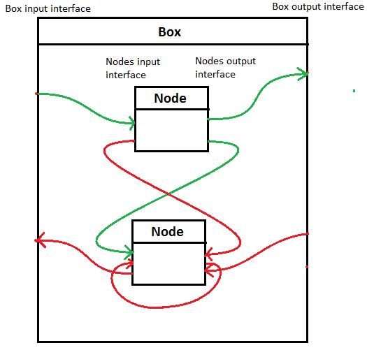
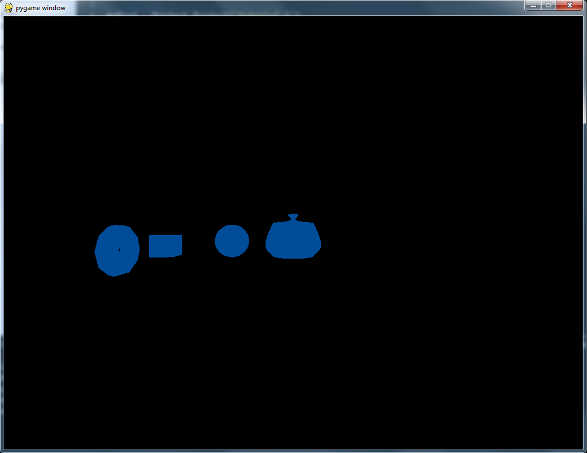

In this tutorial, you have an overview of how the library is working, and you will learn how to use it to create a bootstrap project using the API.
This part's aim is to give a global overview of how the library is working. This is needed to understand the power of the library to design shaders without having to target any particular plateform architecture. This will also let you have in mind all the possibilties the API can give to you
A shader is basically consisting of two programs called the vertex shader and the pixel shader (also called fragment shader), allowing the rendering pipeline of a scene to be dynamically programmable. Each program is used for a specific purpose: the vertex shader is used to execute operations on each vertex of the rendered scene, whereas the pixel shader is used to execute operations on each pixel of the resulting rendered image
As you may understand, the vertex datas (position, color, textures data...) of a vertice will be given as input to your vertex shader program, and the pixel data (color, position, ...) of a pixel will be given as input to your pixel shader. The GPU will execute theses programs on each vertex and each pixel of the rendered scene/image. The trick is, each program will be executed in parallel on many computing units on your GPU, doing the work far more quickly than the CPU could do.
Note: You do not need to learn any of the GPU programming languages (HLSL, GLSL) to learn how to design shaders with ShaderComp. This is the abstraction level ShaderComp gives to you
A shader (should it be a vertex or a pixel one), as explained before, is a chain of simple instructions doing modifications on positions, color, texture datas. This can also be seen as a graph, with output of some nodes linked to the input of some other nodes. The node is then a simple operation (like a '+' or a function call), the input of the node will get a set of values needed for the computation of the operation, and the output are the result or the operation.
Using this vision of the shader, you can easily imagine the possibility of building a complex network of instructions, resulting on a beautiful rendered scene beeing the combination of multiple shaders programs, without writing any line of code!
As a shader is always consisting of two part (ie: the vertex and the pixel shader) any project that you may design will always contains two boxes of nodes: the vertex box and the pixel box. Each box having it's own input and output interface.
Now, let's get started!
To teach you how to use the library, we are going to tell you step by step what you need to do. This is very simple, but to avoid misconfiguration you're advised to follow exactly the steps described below
The library is programmed using the very simple-to-use python language. If you don't have it, download it from the Python official website. Make sure to download the 2.7.6 version.
The following libraries are not mandatory because the library does not have any dependency for the shader compilation. However, they are mandatory for the rendering of an overview of the shader built
Make sure that you get the last version of the library available on the Romain G's github. Once done, create a new folder that will be the root of your project and name it tutorial_1, then simply extract the folder shaderComp in that folder. You can also add a file named proj.py at the root of your project. This file will be the in wich we will create our first shader in the next section.
Well done! You now have all the tools needed to build shaders from scratch installed. Let's create our first project!
Here is a detailed view of the architecture of the files you should have in your project directory, let it be named tutorial_1, at this point of the tutorial:
Note: All the files of the library are note listed here. Please refer to the documentation for of full list of the included features
One file is highlighted below: Project.py. It contains the class Project that provide the main interface of the library.
To create a new project, open the proj.py file you created and write the following lines of code:
from shaderComp.core import *
from shaderComp.shaders import *
myProj = Project.Project('firstProject')
As you may understand, the two first lines allows to import the core functionnality and all the plug-in shaders of the library. Then, on the fourth line, our first project is created. The string given is the name of the project, and will be used as name for the shader file that will finally be generated.
Now that we have our first project created, let's add some nodes to it ! To keep things simple, we will begin by adding two nodes: a vertex shader and a pixel one. But before doing that, we need to define precisely what the shader in goind to do.
The aim here is to only set a fixed color to our models. Let's start by creating the nodes:
myDefaultVertexShader = DefaultVertexShader.DefaultVertexShader()
myColor = Color.Color()
The DefaultVertexShader here is used to do the necessary operation needed in any vertex shader you're going to build. It transforms world coordinates in the camera-view coordinate. Without this steps, you won't be able to see anything on the sceen.
The Color class is used to simply define a color value.
Now that we have our nodes created, we need to give them to the project. This can be achieve with the following lines of code:
myProj.appendNode(myColor)
myProj.appendNode(myDefaultVertexShader)
This is very simple, but remind something that has already been told sooner: a node can be a vertex or a pixel one, and a project has a box for each type of node. As each node has a default shader type properties, the Project can know in wich box it should place the given node. In our case:
Type of this shader:
Vertex Shader
ShaderComp documentation, class DefaultVertexShader
Type of this shader:
Fragment Shader
ShaderComp documentation, class Color
Before moving to the next steps, we need to set the parameters of the color node. The Color class has a member function that allows us to set the color the node will output:
myColor.setParams(0, 0.3, 0.6, 1.0);
A node does not actually have parameters. This function is just a simplyfied way to set constant values to the input interface of the node. This tutorial will teach later the notions of Variable and Link, this other way will so be seen in the second part of the tutorial: Advanded nodes linking.
This is it ! We now have a project with two nodes added in. Let's move to next step: the definition of the box interfaces
As we saw before, a project holds a vertex box and a pixel box. What we need to do after adding some nodes to our project is creating the interface of our two boxes.
An interface is consisting of a list of input variables and output variables. A variable, as it is in most programming languages, is represented by a name and a type. You can take a look at the Var.py file to see how a variable is managed in the library.
In the case of our project, the interface is very simple. Here is what we need:
vertexInVertVar = myProj.addVertexInVar('vertex', 'vec4') # input of the vertex box
vertexOutFinalPositionVar = \
myProj.addVertexOutVar('final_position', 'vec4') # output of the vertex box
pixelOutFinalColor = \
myProj.addPixelOutVar('final_color', 'vec4') # output of the pixel box
As you can see, we do not need to instanciate the Var class in this case. The Project will do that for us. We only need to ask him to add a variable input or output to the vertex or the pixel box. Note that the scope of the name of the interface variables is local to this interface. You can not create two variables of the same name in the same (output or input) interface, but you can without any risk of overriding give the same name of two variables in two different interfaces.
We now have all the interface created (the nodes interface variables are built-in), the last step before project generation is to do all the linking between variables !
Notice that we did not created the interface of the nodes ! The interface is build-in, so we only have to access it
The notion of a link is easy to understand. It's quite like a pipe between two variables, allowing the variable at the input of the pipe the give it's value to the variable at the output of the pipe. This means that the links are directed, and must link the output of a node to the input of another, the input of a box to the input of a node or the output of a node to the output of a box.
This may be confusing, but a very simple diagram can explain this easily
In this example, the green arrows show the allowed links, while the red arrows show the forbidden links.
We created three variables as interface for our vertex and our pixel box. Let's link them to our nodes ! Here is the code that will do that:
myProj.addLink(vertexInVertVar, myDefaultVertexShader.getInVar('vertex'))
myProj.addLink(myDefaultVertexShader.getOutVar('position'), vertexOutFinalPositionVar)
myProj.addLink(myColor.getOutVar('color'), pixelOutFinalColor)
Again, the Project class is used here to create the link between two variables. Note that the first argument of the function is the input of the link, and the second one is the output of the link.
When program shaders, you need to have an access to read and write the current vertex or pixel data. This data is stored in what we call the Pipeline. It can be seen as an array of pairs key/value, where the key is the name of the pipeline variable, and the value is the variable itself.
As the Pipeline is storing variables, you can create a link using them ! Let's add some links between the pipeline and the boxes we created before:
myProj.addLink(myProj.getVertexPipelineVar('Vertex'), vertexInVertVar)
myProj.addLink(vertexOutFinalPositionVar, myProj.getVertexPipelineVar('Position'))
myProj.addLink(pixelOutFinalColor, myProj.getPixelPipelineVar('FragColor'))
The Pipeline is divided in two parts: the pipeline of the vertex shader and the pipeline of the pixel shader. What we do below is getting the pipeline variable named Vertex (a vec4 storing the position of the vertex) to the input of the vertex box created before. Then, we do the same with the pipeline var named Position (a vec4 that will store the resulting position in eye view coordinates) and the pipeline var named FragColor (a vec4 that will store the resulting color of the pixel). The full set of supported pipeline variables can be found in the documentation.
Here we are! All the project is build: the nodes are created and added, the interfaces are linked, our project is now ready to be generated !
The hardest part of the script is done ! Now, only one line is needed to generate the shader code corresponding to the nodes, variables and links defined before. Here it is:
myProj.compute('GLSLPrinter')
As the shaderComp project attempt is to add a generic layer to the shader development, all we have done for now is to define What. What are the shaders ? What are the links between them ? When the description of the shader has been well done, the compute method of the Project class will only need to know wich generator to use to compute the shader code. In our exemple, we use the GLSLPrinter that will generate GLSL source code.
At this point of the tutorial, you should be able to run your script without any error. If any error occurs, take a look at the given implementation and see if you miss anything. If everything goes well, a folder named Tutorial_1 should have been created containing two files: vertexShader.glsl and fragmentShader.glsl. Let's take a look on the code that have been generated in theses files.
Remember what we have done in the vertex box: whe only added one node, the default one, then we linked it to the pipeline using variables. Here is the generated code for that
void main(void) {
gl_Position = gl_ModelViewProjectionMatrix * gl_Vertex;
}
You can see that the pipeline variable gl_Vertex wich is linked to the input of the default vertex shader (as defined in your script) is used in the operation done by the shader. The result is stored in the pipeline variable gl_Position wich is linked to the output of the shader (also as defined in your script)
In the pixel box, we did a simple color setting using the Color shader. Here is the generated code for that:
void main(void) {
gl_FragColor = vec4(0, 0.3, 0.6, 1.0);
}
In this shader, we only set the pipeline variable gl_FragColor, wich have been linked to the output variable of the color shader. The value set is defined by the foud parameters given as input to the color shader (variables r, g, b and a)
Now that you understand the effect of our script, you may want to see how to have an overview of the shader that you generated. Don't you ?
Simply add the following line at the end of your script:
myProj.render()
Run your script, and here is the result !
If your script do not produce that window, or if an error occured, check that you did not forgot any step. To remind you everything, here is the steps that you need to follow for every project using the ShaderComp API:
Here is the complete script of this tutorial:
from shaderComp.core import *
from shaderComp.shaders import *
myProj = Project.Project('tutorial 1')
myColor = Color.Color()
myDefaultVertexShader = DefaultVertexShader.DefaultVertexShader()
myProj.appendNode(myColor)
myProj.appendNode(myDefaultVertexShader)
myColor.setParams(0, 0.3, 0.6, 1.0);
vertexInVertVar = myProj.addVertexInVar('vertex', 'vec4')
vertexOutFinalPositionVar = myProj.addVertexOutVar('final_position', 'vec4')
pixelOutFinalColor = myProj.addPixelOutVar('final_color', 'vec4')
myProj.addLink(vertexInVertVar, myDefaultVertexShader.getInVar('vertex'))
myProj.addLink(myDefaultVertexShader.getOutVar('position'), vertexOutFinalPositionVar)
myProj.addLink(myColor.getOutVar('color'), pixelOutFinalColor)
myProj.addLink(myProj.getVertexPipelineVar('Vertex'), vertexInVertVar)
myProj.addLink(vertexOutFinalPositionVar, myProj.getVertexPipelineVar('Position'))
myProj.addLink(pixelOutFinalColor, myProj.getPixelPipelineVar('FragColor'))
myProj.compute('GLSLPrinter')
myProj.render()